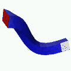
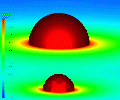
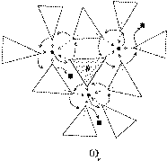
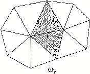
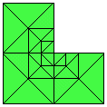
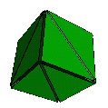
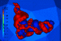
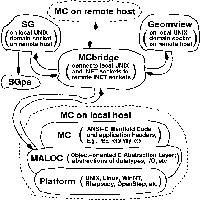

NOTE:
This documentation provides information about installation, configuration,
and general usage of the MC libraries.
Information about the programming interface provided by the MC software
can be found in the Programmer's Guide.
MC (Manifold Code) is a small self-contained parallel adaptive multilevel
finite element software package.
MC is an adaptive multilevel finite element kernel
designed to be used collaboratively with several related
research tools such as MALOC, SG, and APBS.
MC can be used as a small stand-alone adaptive multilevel finite element
code, or it can be used with these other tools
which extend the capabilities of MC in various ways.
MC is designed to numerically approximate the solutions of covariant
divergence-form second-order nonlinear elliptic systems of partial differential
equations on domains with the structure of Riemannian two- and three-manifolds.
To accomplish this task as accurately and efficiently as possible,
MC employs simplex triangulations of the domain manifold,
Petrov-Galerkin finite element methods, a posteriori error estimation,
adaptive mesh refinement and un-refinement, continuation,
Newton methods, multilevel methods, and a new low-communication approach
in parallel adaptive finite element methods.

MC was designed primarily to simulate the large deformation
nonlinear elastic behavior of complicated hyperelastic bodies, although
it can also be used for problems such as the nonlinear Poisson-Boltzmann
equation arising in biophysics, the drift-diffusion semiconductor equations,
and the Hamiltonian and momentum constraints in the Einstein equations.
Ongoing projects include extending MC to numerically evolve the Ricci flow
equations in Geometry and the full Einstein equations in relativity physics.
Examples of MC applied to some of these problems can be found in the
MC gallery.
MC is a class library written in
Clean OO C.
"Clean" refers to the fact that the language
is both legal C++ and legal ANSI/ISO/Standard C, and can be compiled
with any standard C or C++ compiler.
"OO" refers to the programming style employed -- object-oriented.
An Clean OO C implementation consists of a set of "Objects"
(Clean C structs) which are operated on by a collection of "methods"
(Clean C subroutines) which always have a pointer to the Object as their
first argument. This special argument is always written as "thee",
analogous to the implicit "this" pointer in C++.

(An Clean OO C implementation can be turned into a C++ implementation
with a simple AWK/SED or Perl Script.)
As a result of this Clean OO C implementation, MC can be used as a set
of C++-like class libraries, it can be safely software engineered into other
large software packages, and it can be built on just about any UNIX-like
platform with either a C or a C++ compiler, including e.g. Linux, IRIX,
and Win32.
To use some of the graphics and parallel computing features, your platform
must also have some form of standard INET sockets (WINSOCK will work).
MC is easily buildable from source on any UNIX-like system, and uses a
GNU autoconf build environment.
Unusual and interesting features of MC
The following design features of MC make it somewhat unusual and also quite
general.
Abstraction of the PDE: you define your elliptic system only
through a nonlinear weak form over a domain manifold, along with an
associated linearization form, also defined everywhere on the domain
manifold.
Abstraction of the domain: you define your domain manifold by giving a
polyhedral representation of the topology, along with an abstract set of
coordinate labels of your own interpretation, possibly consisting of
multiple charts. MC works only with the topology of your domain (i.e.,
the connectivity of your polyhedral representation). The geometry of
your domain manifold is provided only through your own form definitions,
which contain the manifold metric information.
Dimension-independence: exactly the same code paths are taken for both
two- and three-dimensional problems
(as well as for higher-dimensional problems).
To achieve this dimension-independence, MC employs the simplex as its
fundemental geometrical object.
Geometry representation and manipulation in MC

The RInged VERtex (RIVER) datastructure
is at the heart of the geometry engine in MC.
This datastructure maintains a mesh of simplices in 2D or 3D with near
minimal storage, and yet provides fast (constant- and linear-time) access
to all information necessary for refinement, un-refinement, and discretization
of an operator.
This datastructure also allows the 2D and 3D cases to be treated in a
uniform way, with one implementation covering both cases.
An interesting feature of this datastructure is that the stuctures used
for vertices, simplices, and edges are all of fixed size, so that a fast
array-based implementation is possible, as opposed to a less-efficient
list-based approach commonly taken for unstructured meshes.
For an example illustrating how the datastructure, as well as all of the
adaptivity algorithms using the datastructure, can be implemented entirely
in an array-based language like FORTRAN or MATLAB, have a look at
MCLite,
which is a MATLAB version of MC for 2-manifolds.
Computational geometry primatives (such as computing determinants of small
matrices to high precision) are quite difficult to implement robustly
in floating point arithmetic.
To avoid these types of problems in a robust yet efficient way in MC,
all low-level geometric primatives are built on top of
Jonathan Shewchuk's
remarkable adaptive-precision
geometric predicates.
Refinement and Un-refinment in MC

MC is based on the simplex, and for adaptive refinement it employs:
2D bisection [longest edge (Rivara)]
3D bisection [longest edge (Rivara) or marked edge (Arnold-Mukherjee/Bansch/
Joe-Liu/Maubach)]
Bisection is first used to refine a subset of the simplices in the mesh
(selected according to some error estimates), and then bisection is used
recursively on any non-conforming simplices produced, until a conforming
mesh is obtained (finite termination of this procedure can be shown
for each of the above refinement procedures).
The code can also perform the following refinement procedures for uniform refine
ments of a given simplex mesh:
2D quadra-section [augmented regular (Bank)],
3D octa-section [augmented regular (Bey/Ong/Zhang)]

Algebraic construction of the coarse problem is supported, in both
the 2D and 3D fully unstructured settings.
As a result, the underlying multilevel algorithm is provably convergent
in the self-adjoint-positive case.
The multilevel algorithm has provably optimal convergence properties under
the standard regularity assumptions, and is nearly-optimal under very
weak regularity assumptions.
The user must define a sequence of an algebraic prolongation
operators in a standard YSMP-row-wise matrix datastructure; MC then
constructs the algebraic multilevel hierarchy from the prolongation operators.
An automated construction of provably stable prolongation operators for
use in the multilevel algorithms and in the two-level domain decomposition
algorithms used in MC is under development.
Discretization in MC
A choice of piece-wise linear or piece-wise quadratic finite element basis
functions are provided.
The quadratic functions are provided mainly to avoid the locking problem
when simulating near-incompressible elastic materials, and for dealing
with the second derivative terms appearing in the Riemann tensor in the
gravitational field equations.
While MC provides standard linear and quadratic elements by default,
the assembly procedure and linear algebra datastructures support a wide
variety of element types; in particular, different element types may be
used for different components of a coupled elliptic system.
Solution of nonlinear systems in MC

When a system of nonlinear finite element equations must be solved in the
code (for the case of a nonlinear elliptic system, or during the implicit
time-stepping evolution of a nonlinear evolution problem),
a global inexact-Newton procedure is employed, where the linearization
systems are solved by linear multilevel methods.
Elliptic systems are solved using either a "Gummel" de-coupling procedure,
or using a coupled Newton method.
Solutions with folds or bifurcations are handled with natural parameter
or pseudo-arclength continuation.
The two-layer "Clean OO C" implementation of MC
MC is a set of class libraries written in pure
Clean OO C,
and is therefore completely portable (from PC to iMac to CRAY).
This portability is achieved through the use of a very small but
powerful abstraction layer,
called MALOC (Minimal Abstraction Layer for
Object-oriented C).
The MALOC class library layer provides abstract datatypes,
memory management routines, timing routines, machine epsilon,
access to UNIX and INET sockets, MPI, and so on.
All things that can vary from one architecture to another are abstracted out
of MC and placed in the MALOC layer.
To port MC to a new architecture, only the small MALOC abstraction
layer needs to be ported.
(Porting MALOC usually means only typing: "./configure ; make")
As a result of this pure Clean OO C implementation, MC can be used as a set
of C++-like class libraries, it can be safely software engineered into other
large software packages, and it can be compiled on just about any UNIX-like
platform with either a C or a C++ compiler, including e.g. Linux, IRIX,
and WindowsNT.
To use some of the graphics and parallel computing features in MC provided
by the underlying MALOC library, your platform must also have some form of
standard INET sockets (WINSOCK will work).
Using MC as a set of class libraries
MC can be used as a collection of class libraries from
within another application code.
One creates an MC object, and then simply applies the appropriate methods
to the MC object (or its sub-objects).
Each object maintains its own internal state, giving the class libraries
the property of re-entrancy: several MC objects can be created and
manipulated to solve different PDEs on different meshes within the same
application at the same time.
This can be used for example to construct Gummel-like iterations for
elliptic systems.
Using MC through the MCshell
While MC can be used cleanly as a collection of class libraries,
it can also be used entirely through the MCshell, which is a
mostly Bourne-compatible command shell.
The MCshell maintains an internal environment state, and can be used to
execute MCshell scripts using a high-level MC manipulation language.
All important features of the MC class libraries can be manipulated
by using only the MCshell, so that MC can be used either interactively,
or in batch mode by executing scripts.
The MCshell produces a history file of the session,
which can be re-executed to recreate the previous session exactly.
In addition, MCshell scripts can be executed during an interactive session
by using normal Bourne shell syntax (e.g., ". filename.mcsh").
If you have ever used a command shell under UNIX, then you will be
able to easily get started using MC through the MCshell.
(In fact, since the MCshell is mostly Bourne-shell compatible, you
could actually use it as your UNIX login shell.)
Geomview and GMV graphics through pipes and sockets in MC
MC performs all I/O through an abstracted software I/O layer in MALOC,
which provides access to files, pipes, UNIX domain sockets, and INET sockets.
This allows several instances of MC to work collaboratively on a problem
in a distributed memory computing environment, as well as to make use of the
University of Minnesota's Geomview as the primary display utility.
MC can produce OFF-compatible output for use by Geomview as file input,
or it can write OFF output directly to pipes, UNIX domain sockets,
or INET sockets.

A socket "bridging" utility called MC-bridge
is provided with MC which bridges UNIX and INET
sockets, so that MC executing on a remote machine can communicate with
Geomview listening to a UNIX domain socket on the local machine,
using INET sockets on the local and remote machines, and then an INET-to-UNIX
domain socket bridge on the local machine.
MC can also produce GMV-compatible output files for use in rendering
displays of solution functions with GMV from Los Alamos National Laboratory.
A minimal Geomview clone called
SG
can be used with MC.
It mimics most of the basic features of Geomview for displaying planar
polygons.
It can be hung on a UNIX domain socket like Geomview.
Unlike Geomview, SG can also listen directly to INET sockets, and it
will run on either X11 or Win32 platforms (such as Windows NT).
In the case of Windows NT, SG uses the WINSOCK API for INET socket access.
The graphics in SG is done in an entirely platform-independent manner
using OpenGL.
The window-system specific connection to X11 or Win32 is made through
"WGL" extensions to Win32 under NT, or using the SGI "GLw" widget set
on any X11 platform.
Parallel computing with MC
MC implements a new approach to the use of parallel computers with
adaptive finite element methods, based on the idea of local
a priori and local a posteriori error estimates.
The algorithm has two interesting features: (1) almost no communication is
required (no boundary exchanges), and (2) only a few lines of an existing
sequential adaptive code must be changed in order to implement the parallel
algorithm.
The new algorithm was developed jointly with Randy Bank and is
described in the following
paper.
The communication primatives required are quite simple, and can be
implemented using sockets rather than a more serious communication library
such as MPI.
In either case,
MC accesses INET sockets and/or MPI functions through the MALOC abstraction
library, and as a result MC can be used in parallel on any heterogeneous
collection of UNIX and/or WINSOCK platforms.
While MC is itself a self-contained software package, it is one of several
components of
FETK
(the Finite Element ToolKit).
FETK
consists of the following components written in Clean OO C:
MALOC - Minimal Abstraction Layer for Object-oriented C programs.
PUNC - Portable Understructure for Numerical Computing.
MC - Manifold Code finite element package (uses MALOC and PUNC).
MCX - MC eXtension libraries (uses MALOC, PUNC, and MC).
MALOC is self-contained, and requires only an ANSI-C compiler on a UNIX
or Win32 platform. PUNC, GAMer, SG, and MC are also self-contained, but rely
on MALOC having been previously installed on the platform. Additional features
of MC are enabled if PUNC is available, but PUNC is not required to build MC.
The MC eXtension libraries MCX are constructed on top of MALOC and MC, and
in order install and use MCX one must first correctly configure and install
both MALOC and MC. MCX is made up of a number of individual libraries
developed by members of our group, or contributed by one of a number of
colleagues. More information about
FETK
can be found on the
FETK
website:
MC is copyrighted, but is redistributable in source and binary form
under the following license.
The MC source can be downloaded from the
FETK Download Page.
MC uses the low-level FETK abstraction library
MALOC,
as well as the low-level FETK numerical library
PUNC,
both of which must be installed before installing MC.
MC can also make use of FETK visualization and meshing libraries
SG
and
GAMer,
although they are not required in order to build or use MC.
You gave me a "patch.gz" file to fix a bug in MC; how do I apply the patch?
To apply patches to upgrade MC to a new version, you first obtain the patch
from me or my webpage as a single file with a name like "patch.gz". You
apply the patch after you have unpacked the mc.tgz file as described above.
To apply the patch, cd into the directory containing the root MC directory
(called "mc" after unpacking mc.tgz) and execute the "patch" program as
follows (the patch program exists on most UNIX machines):
gzip -cd patch.gz | patch -p0
Patch files are simply the output from a recursive "diff" that are used to
represent all differences between two directory trees. For example, to create
a patch representing the changes from version 1.0 of MC (in directory
mc_1.0 for example) to version 1.1 of MC (e.g. in directory mc_1.1),
I would normally type the following:
diff -r -u -N mc_1.0 mc_1.1 > patch1
gzip -v patch1
which would produce the gzipped patch file "patch1.gz". If you had previously
installed version 1.0 of MC but would like to upgrade to version 1.1 of
MC, you could just download the file "patch1.gz" and apply the changes
using the program "patch" as above, rather than downloading and reinstalling
the entire version 1.1 of MC.
I really don't know what I'm doing; how to I get more documentation for MC?
Why did you develop MC? There are many other finite element packages, right?
I wanted to solve some nonlinear elliptic and parabolic systems that arise in
geometry and physics using adaptive finite element methods, as part of some
projects I became involved in at Caltech in 1994. It quickly became clear
that there were no publicly available software packages for handling some of
the more difficult features of these problems (rapid nonlinearities, three
spatial dimensions, systems, complex differential operators, and manifold
domains requiring multiple charts).
I decided to try to build an adaptive multilevel finite element code based on
the 2-simplex and the 3-simplex, for general coupled second-order nonlinear
elliptic systems on 2- and 3-manifolds. The idea was to be as general, simple,
and robust as possible; the only real restriction I made early on was that the
principle part of the differential operator had to be in divergence form,
so that piecewise linear finite elements had a chance of making sense.
This has now loosened up a bit, due to the fact that the element itself has
been abstracted out and placed in the domain of the user-defined code.
The design philosophy followed Randy Bank's two-dimensional finite element
code PLTMG in many ways, with appropriate modifications to handle the
three-dimensional case as transparently as possibly, always keeping in mind
the need to handle general nonlinear systems on manifold domains.
Another reason that I wrote MC is that I find I don't really understand an
algorithm until I implement it. In this sense, MC is an algorithm research
tool that I have grown from scratch to allow me to experiment with adaptive
multilevel finite element methods, numerical continuation methods, iterative
methods for linear and nonlinear algebraic systems, and so forth. I use it
in conjunction with MCLite (a 2D version of MC written entirely in the
MATLAB language) for research and teaching.
What is in all of these subdirectories? Where exactly is "MC"?
MC consists of several (class) libraries from which you will call routines
to handle your application. You will need to write a main driver program
(and any supporting routines you need to define your problem) and then link
to the libraries. Alternatively, you can use MC's builtin lexer/parser in
an interactive session by starting up "mcsh", the MCshell. The MCshell
looks and feels very much like bash (a superset of the bourne shell), and you
can write small scripts to control almost everything in the MC class library,
completely through the MCshell, without writing a line of C or C++.
As described in the file "INSTALL", you will build all of the libraries in one
shot for your particular architecture, along with various test programs to
verify that the various pieces are functioning correctly. The libraries end
up in "mc/lib", and the header files are in subdirectories in "mc/inc".
After the build, you will be ready to work with your particular application
main driver, and you just need to link to the libraries. Sample main drivers
and makefiles are in the "mc/examples/*" subdirectories. Things are setup for
you to work completely in one of those directories. Of course, all you really
have to do is link to the MC libraries, so you can use it how you like; the
makefiles and drivers in "mc/examples/*" just provide an example of how to get
MC working correctly. I actually develop and use MC by working mainly from
one of those subdirectories.
The following directory tree is created when you unpack the MC "mc.tgz"
distribution file by following the instructions in the INSTALL document:
The src directory has the additional subdirectory structure for each
library forming MC:
src
|
----------------------------
/ | | | | | \
aprx bam base gem mcsh nam pde
Within each library source directory is an additional subdirectory,
"mc". The "mc" subdirectory contains public headers for the library,
representing the library API; these headers will be installed in the
specified header install directory during the install procedure after
building MC.
The following is a brief description of each subdirectory of the package.
mc - The entire MC package
mc/config - GNU Autoconf scripts and non-unix config files
mc/doc - MC documentation
mc/examples - Complex examples and data files for using MC
mc/src - MC source code (all source and headers)
mc/src/aaa_inc - Header installation tools
mc/src/aaa_lib - Library installation tools
mc/src/*/mc - The MC headers (API)
mc/src/aprx - Source for M. Holst's APRX (APRoXimation Methods)
mc/src/base - Source for M. Holst's BASE (MC foundation headers)
mc/src/bam - Source for M. Holst's BAM (Block Algebraic Methods)
mc/src/gem - Source for M. Holst's GEM (Geometry Engine Methods)
mc/src/mcsh - Source for M. Holst's MCSH (The MC Shell)
mc/src/nam - Source for M. Holst's NAM (Nonlinear Algebraic Methods)
mc/src/pde - Source for M. Holst's PDE (Partial Diff. Equation)
mc/tools - Some binary tools for use with MC
Okay, I seem to have installed MC correctly; how do I actually use it now?
Using MC is pretty simple; it is a very object-oriented implementation,
although it is written in C. It is actually written in an object-oriented
form of "Clean C", which is the overlapping subset of ANSI/Standard C and
C++, so you can compile the code as a legal C++ or ANSI/Standard C code.
Using the code consists of constructing objects (represented by C structs)
and manipulating these objects using appropriate methods (represented by C
functions which follow a certain object-oriented prototype convention).
You provide the definition of your differential operator by providing a PDE
object. This object contains several pieces of information, including
information about the spatial dimension, number of unknowns per spatial point,
and so on. This object must also contain pointers to the functions defining
the various functions in your PDE, such as the weak form of your differential
operator evaluated at a point, a linearization bilinear form evalulated at a
point, and a dirichlet boundary function. By looking at the example files
"mypde.c" in "mc/examples/*", you will see exactly how to construct this PDE
object. Some example PDE definitions also appear in "mc/examples/*".
Once you have built this PDE object as in the example file pde.c, you then
construct a MCsh object, which requires your PDE object as an input parameter.
At this point, you can use appropriate methods to operate on the MCsh object
to accomplish the solution of your PDE. The example drivers main.c in
"mc/examples/*" show how to call the more important methods to operate on
the MCsh object, such as discretize your elliptic system with piecewise linear
finite elements over 2- or 3-simplices, solve the discrete system, do a
posteriori error estimation, mesh refinement, solve again, etc, in a way
modeled after Randy Bank's two-dimensional code "PLTMG". The sample main
driver main.c includes a single header file "mc/inc/mc/mcsh.h", which
includes everything the MC package needs. The sample problem file mypde.c
also includes this single header file, which provides the definition of the
PDE object, as well as prototypes for the functions which the PDE object
function pointers will point to.
Finally, you specify your manifold domain by using a particular MCsh method,
giving the name of the mesh file as a parameter. The mesh file has a very
simple format; there are example mesh files in the "mc/examples/*".
Rather than giving a more detailed explanation of the usage of MC here, it
seems to me that the best way to see how it works is to study the example main
program and supporting routines in the "mc/examples/*" subdirectories; these
are well-documented, and you should be able to modify the driver to handle
your application. Or, simply start up mc, the MCshell.
What is the class hierarchy? How are the various libraries related?
Detailed information on the class relationships can be found
in the
Programmers's Guide.
The following directed graph shows the class library dependencies.
(This tends to evolve as MC is developed.)
MC is distributed in both binary format (as a binary RPM file
mc-VERSION.i386.rpm for i386-based versions of Linux) and in source
format (as a source RPM file mc-VERSION.src.rpm and as a gzipped tar
file "mc-VERSION.tar.gz").
Installation using the binary RPM file
The following rpm command will install all of the MC headers and libraries
into /usr/local/include and /usr/local/lib, and will install the MC
documentation into /usr/share/doc/packages/mc:
rpm -Uvh mc-VERSION.i386.rpm
Installation and rebuilding from sources using the source RPM file
The following rpm command will unpack the source rpm file
"mc-VERSON.src.rpm" into the MC gzipped tar file containing
the sources called "mc-VERSION.tar.tar.gz" and into a small RPM
spec file called "mc-VERSON.spec":
rpm -Uvh mc-VERSION.src.rpm
The sources can then be unpacked and built using the directions for
the gzipped tar file below.
Alternatively, the following rpm command will do these steps for you:
rpm -bp mc-VERSION.spec
Rebuilding binary and source RPM files from the gzipped tar file
The MC sources contain the RPM spec file "mc-VERSON.spec" in the
root source directory; as a result, rebuilding the RPM files from sources
can be done using the rpm command:
rpm -ta mc-VERSION.tar.gz
The result will be the corresponding source and binary rpm files,
named "mc-VERSON.src.rpm" and "mc-VERSION.i386.rpm".
Normally, these files are written to /usr/src/redhat/SRPMS
and /usr/src/redhat/RPMS respectively, but you must be logged in
as root for these to work.
The destination directories can be overriden using arguments to the
rpm program (see the rpm manpage).
Installation and building from sources using the gzipped tar file
The following command will
unpack MC into a number of subdirectories and files on any UNIX machine
(and on any WinNT machine with the GNU-Win32 tools gzip and tar).
gzip -dc mc.tgz | tar xvf -
MC is essentially a multilevel adaptive finite element "kernel". It is
designed to be easily extended through the use of extension packages which
are constructed on top of MC. The extension packages that I have written
such such as MCgp (MC for Geometric PDEs) are also distributed as gzipped tar
files (e.g. "mcgp.tgz"). The installation instructions for such extension
packages are identical to the instructions below for the MC kernel (e.g.,
substitute "MCgp" for every occurance of "MC" below).
Building the package using the GNU "configure" shell script and "make"
The "configure" shell script in the "mc" directory (the toplevel
directory created when you unpacked the MC tgz file) will build the entire
package. This is a standard GNU autoconf-generated configuration script.
For a list of the possible configuration options, type:
./configure --help
You should be able to build MC by simply typing:
./configure
make
make install
However, it is often advantageous to keep the original source directory
pristine; the configure script can actually be run outside the source
tree, which will keep all files created by the build outside the source
tree. (This idea is related to the section below describing how to build
binaries for multiple architectures at the same time using the same source
tree, and requires that your version of make has the VPATH facility, such
as GNU make.) For example, I build MC in a separate directory from the
source tree as follows:
gzip -dc mc.tgz | tar xvf -
mkdir mc_build
cd mc_build
../mc/configure
make
make install
Building binaries for multiple architectures in the same source directory
If you have a version of "make" that supports the VPATH facility (such as
any recent version of GNU make), then you can build the package for multiple
architectures in the same source directory (in fact, you can do the compiles
at the same time without collisions). This is very useful if you have your
home directory on an NFS volume that you share among multiple architectures,
such as SGI, Linux, etc. To build MC for all the systems at the same time,
you simply make an additional subdirectory in the main MC directory for
each architecture, copy "configure" into it, "cd" into the subdirectory, and
then install as above. For example, on a linux machine you would do the
following:
mkdir linux
cp configure linux/.
cd linux
./configure
make
make install
If you mount the same NFS home directory on for example an OpenStep box,
you could at the same time do the following:
mkdir next
cp configure next/.
cd next
./configure
make
make install
Again, both builds can actually be done outside the source tree rather
than in a subdirectory of the source tree, as described in the previous
section.
Building shared libraries rather than static libraries
(MIKE: give an overview of libtool.)
Rebuilding the configure script and the Makefile.in files
If for some reason you actually need to rebuild the configure script or the
Makefile.in files using the GNU autoconf suite, you should read the block of
documentation at the top of the configure.in file. The commentary I put there
explains exactly how the GNU autoconf suite must be used and in what order,
and exactly what files are produced at each step of the process. A script
called "bootstrap" which automates this process is located in the config
subdirectory of the MC source tree.
Platform-specific information
Below is some platform-specific build/usage information for MC.
Linux (Source: M. Holst, UCSD)
Things should work as described above.
FreeBSD/NetBSD/OpenBSD (Source: M. Holst, UCSD)
Things should work as described above.
OpenStep (Source: M. Holst, UCSD)
Things should just work, but you may have to set the CC environment
variable as follows before typing ./configure:
export CC="/bin/cc"
or you might need to use:
export CC="/bin/cc -ObjC"
IRIX (Source: M. Holst, UCSD)
If you are on a 64-bit IRIX box such as an Onyx, Octane, or Origin,
set the CC environment variable as follows before typing ./configure:
export CC="/bin/cc -64"
If you are on a 32-bit IRIX box such as an O2 or Indy,
set the CC environment variable as follows before typing ./configure:
export CC="/bin/cc -32"
Win32 (Source: M. Holst, UCSD)
Unless you have the Cygwin environment, you need to use one of the
included project file collections for one of the commercially
available ANSI C or C++ compilers for the Win32 environment.
What you end up with
Once the build completes via the configure/make procedure above with no
errors, you will want to cd into an example directory to get started, e.g.
"cd examples/generic" (or "cd mc/examples/generic"). In the example
directories you will find:
mypde.c --> Example partial differential equation definition file
mypde.h --> The prototypes of the functions that you must provide
myelm.c --> Example element definition file
main.c --> compiled and linked with mypde.c to become --> mcsh
The "main.c" example uses MC's builtin-lexer/parser to parse commands in an
interpreted interactive session I call the "MCshell", or "mcsh". You will
want to start with mcsh by typing "./mcsh", which will fire up a shell that
looks and feels like bash (a bourne-compatible command shell). Type "help"
at the command prompt for help.
If mcsh works like it was designed, you won't need any more information to
use MC. If you want to know more about the details of the numerical methods
in MC, or about the implementation details such as the socket communication
layer, have a look in "mc/doc" for documentation.
Using MC on a parallel computer
MALOC provides abstractions to both INET sockets and MPI for communication
support in parallel computing software. MC inherits this capability from
the MALOC library. Control of the overall structure is accomplished through
MCshell (enhanced MALOC-shell) scripts you write, or through calls to the
MC library. (Going through the MCshell is much simpler, and you have
access to all the communication possibilities through the MCshell.)
Several instances of MC can be used collaboratively in parallel through the
use of either INET sockets or MPI. Control of the overall structure is
accomplished through the MCshell scripts you write. You can also write your
own main program and use the vmp library directly (using vmp's "Oracle" class
is quite straightforward), but going through the MCshell is much simpler, and
you have access to all the communication possibilities through the MCshell.
Several examples of scripts which perform parallel adaptive elliptic solves
may be found in the "mc/examples/generic/mcsh" subdirectory. To run one of
the scripts and actually get some parallel computation to occur requires the
following (e.g. for an MPI-based computation, using the MPICH startup
environment):
Build MC with MPI enabled; this is usually accomplished simply by
giving an argument to the GNU configure script:
./configure --enable-mpi
Note that if your installation of MPI is located in an unusual
directory, then the configuration script may have trouble finding
the MPI library (libmpi.a) or the MPI header file (mpi.h). If so,
then MPI will not be enabled. The configure script prints out the
state of affairs quite clearly as to whether it found the library
and the header. If you have MPI and configure is not finding it,
then read the section of this installation guide entitled
"Getting MC to find your installation of MPI" for several
different solutions.
Copy one of the parallel MCshell scripts from
"mc/examples/generic/mcsh/" into your working directory
as "rc.mcsh".
--Alternatively--
Copy one of the parallel MCshell scripts from
"mc/examples/generic/mcsh/" into some other directory
that will contain all input and output files for your run
as "rc.mcsh", AND then set the environment variable MCSH_HOME
to that directory. If I wanted all file i/o to occur in the
temporary directory /tmp/mc, I would place the following in
my ~/.bash_profile file:
export MCSH_HOME="/tmp/mc"
and I would place the following in my ~/.ssh/environment file:
MCSH_HOME=/tmp/mc
(This last is required if you use ssh for your MPI remote shell.)
Start up mcsh using MPICH's "mpirun" command as follows:
mpirun -np 4 mcsh
Sit back and wait for the processes to finish their work.
Getting MC to find your installation of MPI
If your installation of MPI is located in an unusual directory, then the
configuration script may have trouble finding the MPI library (libmpi.a)
or the MPI header file (mpi.h). Again, the configure script prints out the
state of affairs quite clearly as to whether it found the library and the
header. If you have MPI and configure is not finding it, then here are
several possible solutions, each of which usually works. They are listed in
preferred order (i.e. you should try Solution 1 first, and if that doesn't
work try Solution 2, and so on).
Solution 1:
Have your system administrator install MPI in a proper system
directory so that MC (and other AUTOCONF-based codes) can find it!
Solution 2:
Find the location of libmpi.a and mpi.h on your system,
either by asking your sysadmin, poking around yourself,
or (if you have it) using the "locate" utility:
locate mpi.h
locate libmpi.a
locate libmpich.a
On my Redhat6.2 Linux box, the following output is produced:
Before running the configure script, preset the FETK_MPI_INCLUDE
and FETK_MPI_LIBRARY environment variables to point to the
directories containing mpi.h and libmpi.a (or libmpich.a). Under
bash, using the results from the example above, I would do this as
follows:
export FETK_MPI_INCLUDE=/usr/share/mpi/include
export FETK_MPI_LIBRARY=/usr/share/mpi/lib
./configure --enable-mpi
make clean; make; make install
The configure script should now report that it successfully
found the library and header and thus enabled MPI, and then
MC should compile without error.
Debugging using the ElectricFence malloc debug library
To allow ElectricFence to intercept all calls to malloc, free, and
related dynamic memory allocation system calls, simply run the configure
script as follows:
./configure --enable-efence
make clean; make; make install
MC (Manifold Code, or Michael's Code) was conceived,
designed, and implemented over several years by
Michael Holst,
beginning with an initial implementation in 1994.
Various colleagues have contributed ideas and/or code to MC
(see the credits list below).
MC (Manifold Code)
Copyright (C) 1994--
Michael Holst TELE: (858) 534-4899
Department of Mathematics FAX: (858) 534-5273
UC San Diego, AP&M 5739 EMAIL: mholst@ccom.ucsd.edu
La Jolla, CA 92093 USA WEB: http://ccom.ucsd.edu/~mholst
MC was designed to be the finite element kernel on top of a platform
abstraction layer MALOC, and is usually used with a socket graphics tool
called SG (both MALOC and SG were also developed by
Michael Holst).
MC was developed almost
entirely on a home-grown 90Mhz Pentium PC running various flavors of
Linux and [Free|Net|Open]BSD, using primarily GNU, BSD, and other free
software development tools. Most of the development occurred during the
hours of 10pm to 2am on a daily basis for several years, under heavy
influence of Starbuck's coffee, with helpful advice provided by Mac and
Mochi (two cats knowledgable in socket programming and numerical analysis).
MC was released under the GNU GPL (GNU General Public License) beginning
with the initial implementation in 1994, and continues to be released under
this license. What this means is that like all
GNU software, MC is freely redistributable in source code form following
the rules outlined in the text of the GNU GPL. You should have received a
copy of the GNU GPL with this distribution of MC; a copy can be found
here.
If you did not receive a copy of the GNU GPL, please write to me and also
write to:
The Free Software Foundation, Inc., 675 Mass Ave, Cambridge, MA 02139, USA.
Software included in the MC source code package
A complete roadmap to the source code forming the MC package can be
found above.
While the core MC classes were developed by
Michael Holst,
the following single file is currently also included with MC:
mc/src/gem/pred.c - J. Shewchuk's geometric "predicates.c"
Computational geometry primatives are quite difficult to implement
robustly in floating point arithmetic; we use Jonathan Shewchuk's
adaptive precision predicates for our low-level geometric primatives
(basically for computing determinants of small matrices).
Credits
Below is a credits list for the people that have
contributed to MC in one way or another.
The fields below follow the credits file format used in the
Linux kernel CREDITS file to allow for easy manipulation via shell scripts.
The fields are as follows:
N: name of contributor
E: email address
W: web address
P: PGP key ID and fingerprint
D: description of primary contributions
S: snail-mail address
N: Michael Holst
E: mholst@ccom.ucsd.edu
W: http://ccom.ucsd.edu/~mholst
P: 1024/0xB5212DCD
D: mc/* -- The package structure
D: mc/acconfig.h -- The platform abstraction information
D: mc/configure.in -- The GNU autoconf/automake structure
D: mc/config/* -- The GNU autoconf/automake shell scripts
D: mc/doc/* -- The package documentation
D: mc/examples/* -- The package examples
D: mc/src/aaa_inc/* -- Library header build structure
D: mc/src/aaa_lib/* -- Static and shared library build structure
D: mc/src/base/* -- Foundation headers
D: mc/src/aprx/* -- M. Holst's APpRoXimation library
D: mc/src/bam/* -- M. Holst's Basic Algebraic Methods library
D: mc/src/gem/* -- M. Holst's GEometry Machine library
D: mc/src/mcsh/* -- M. Holst's MCSHell library
D: mc/src/nam/* -- M. Holst's Nonlinear Algebraic Methods library
D: mc/src/pde/* -- M. Holst's PDE library
D: mc/tools/* -- Tools built on the libraries
S: Department of Mathematics
S: UC San Diego, AP&M 5739
S: La Jolla, CA 92093 USA
N: Steve Bond
E: bond@ccom.ucsd.edu
D: mc/maloc.spec -- RPM support (for building src/binary RPMs)
D: mc/src/bam/* -- Improved matrix library (supports MG and HB)
S: Department of Mathematics
S: UC San Diego
S: La Jolla, CA 92093 USA
Contacting the Author
If you have questions or comments about MC, please feel free to contact
me at mholst@ccom.ucsd.edu.
M. Holst, Adaptive numerical treatment of elliptic systems on manifolds.
Advances in Computational Mathematics,
15 (2001), pp. 139-191.
This version of MC is distributed under the following guidelines:
MC (Manifold Code)
Copyright (C) 1994-2010 Michael Holst
This program is free software; you can redistribute it and/or modify it
under the terms of the GNU General Public License as published by the
Free Software Foundation; either version 2 of the License, or (at your
option) any later version.
This program is distributed in the hope that it will be useful,
but WITHOUT ANY WARRANTY; without even the implied warranty of
MERCHANTABILITY or FITNESS FOR A PARTICULAR PURPOSE.
See the GNU General Public License for more details.
You should have received a copy of the GNU General Public License along
with this program; if not, write to the Free Software Foundation, Inc.,
675 Mass Ave, Cambridge, MA 02139, USA.
The GPL (GNU General Public License) below is copyrighted by the
Free Software Foundation. However, the instance of software that
it refers to, my package in this case, is copyrighted by myself as
the author of the package. Any additional software that I distribute
with my software is copyrighted by the authors of those pieces of
software (see the individual source files for author information).
---Michael Holst
GNU GENERAL PUBLIC LICENSE
Version 2, June 1991
Copyright (C) 1989, 1991 Free Software Foundation, Inc.
59 Temple Place, Suite 330, Boston, MA 02111-1307 USA
Everyone is permitted to copy and distribute verbatim copies
of this license document, but changing it is not allowed.
Preamble
The licenses for most software are designed to take away your
freedom to share and change it. By contrast, the GNU General Public
License is intended to guarantee your freedom to share and change free
software--to make sure the software is free for all its users. This
General Public License applies to most of the Free Software
Foundation's software and to any other program whose authors commit to
using it. (Some other Free Software Foundation software is covered by
the GNU Library General Public License instead.) You can apply it to
your programs, too.
When we speak of free software, we are referring to freedom, not
price. Our General Public Licenses are designed to make sure that you
have the freedom to distribute copies of free software (and charge for
this service if you wish), that you receive source code or can get it
if you want it, that you can change the software or use pieces of it
in new free programs; and that you know you can do these things.
To protect your rights, we need to make restrictions that forbid
anyone to deny you these rights or to ask you to surrender the rights.
These restrictions translate to certain responsibilities for you if you
distribute copies of the software, or if you modify it.
For example, if you distribute copies of such a program, whether
gratis or for a fee, you must give the recipients all the rights that
you have. You must make sure that they, too, receive or can get the
source code. And you must show them these terms so they know their
rights.
We protect your rights with two steps: (1) copyright the software, and
(2) offer you this license which gives you legal permission to copy,
distribute and/or modify the software.
Also, for each author's protection and ours, we want to make certain
that everyone understands that there is no warranty for this free
software. If the software is modified by someone else and passed on, we
want its recipients to know that what they have is not the original, so
that any problems introduced by others will not reflect on the original
authors' reputations.
Finally, any free program is threatened constantly by software
patents. We wish to avoid the danger that redistributors of a free
program will individually obtain patent licenses, in effect making the
program proprietary. To prevent this, we have made it clear that any
patent must be licensed for everyone's free use or not licensed at all.
The precise terms and conditions for copying, distribution and
modification follow.
GNU GENERAL PUBLIC LICENSE
TERMS AND CONDITIONS FOR COPYING, DISTRIBUTION AND MODIFICATION
0. This License applies to any program or other work which contains
a notice placed by the copyright holder saying it may be distributed
under the terms of this General Public License. The "Program", below,
refers to any such program or work, and a "work based on the Program"
means either the Program or any derivative work under copyright law:
that is to say, a work containing the Program or a portion of it,
either verbatim or with modifications and/or translated into another
language. (Hereinafter, translation is included without limitation in
the term "modification".) Each licensee is addressed as "you".
Activities other than copying, distribution and modification are not
covered by this License; they are outside its scope. The act of
running the Program is not restricted, and the output from the Program
is covered only if its contents constitute a work based on the
Program (independent of having been made by running the Program).
Whether that is true depends on what the Program does.
1. You may copy and distribute verbatim copies of the Program's
source code as you receive it, in any medium, provided that you
conspicuously and appropriately publish on each copy an appropriate
copyright notice and disclaimer of warranty; keep intact all the
notices that refer to this License and to the absence of any warranty;
and give any other recipients of the Program a copy of this License
along with the Program.
You may charge a fee for the physical act of transferring a copy, and
you may at your option offer warranty protection in exchange for a fee.
2. You may modify your copy or copies of the Program or any portion
of it, thus forming a work based on the Program, and copy and
distribute such modifications or work under the terms of Section 1
above, provided that you also meet all of these conditions:
a) You must cause the modified files to carry prominent notices
stating that you changed the files and the date of any change.
b) You must cause any work that you distribute or publish, that in
whole or in part contains or is derived from the Program or any
part thereof, to be licensed as a whole at no charge to all third
parties under the terms of this License.
c) If the modified program normally reads commands interactively
when run, you must cause it, when started running for such
interactive use in the most ordinary way, to print or display an
announcement including an appropriate copyright notice and a
notice that there is no warranty (or else, saying that you provide
a warranty) and that users may redistribute the program under
these conditions, and telling the user how to view a copy of this
License. (Exception: if the Program itself is interactive but
does not normally print such an announcement, your work based on
the Program is not required to print an announcement.)
These requirements apply to the modified work as a whole. If
identifiable sections of that work are not derived from the Program,
and can be reasonably considered independent and separate works in
themselves, then this License, and its terms, do not apply to those
sections when you distribute them as separate works. But when you
distribute the same sections as part of a whole which is a work based
on the Program, the distribution of the whole must be on the terms of
this License, whose permissions for other licensees extend to the
entire whole, and thus to each and every part regardless of who wrote it.
Thus, it is not the intent of this section to claim rights or contest
your rights to work written entirely by you; rather, the intent is to
exercise the right to control the distribution of derivative or
collective works based on the Program.
In addition, mere aggregation of another work not based on the Program
with the Program (or with a work based on the Program) on a volume of
a storage or distribution medium does not bring the other work under
the scope of this License.
3. You may copy and distribute the Program (or a work based on it,
under Section 2) in object code or executable form under the terms of
Sections 1 and 2 above provided that you also do one of the following:
a) Accompany it with the complete corresponding machine-readable
source code, which must be distributed under the terms of Sections
1 and 2 above on a medium customarily used for software interchange; or,
b) Accompany it with a written offer, valid for at least three
years, to give any third party, for a charge no more than your
cost of physically performing source distribution, a complete
machine-readable copy of the corresponding source code, to be
distributed under the terms of Sections 1 and 2 above on a medium
customarily used for software interchange; or,
c) Accompany it with the information you received as to the offer
to distribute corresponding source code. (This alternative is
allowed only for noncommercial distribution and only if you
received the program in object code or executable form with such
an offer, in accord with Subsection b above.)
The source code for a work means the preferred form of the work for
making modifications to it. For an executable work, complete source
code means all the source code for all modules it contains, plus any
associated interface definition files, plus the scripts used to
control compilation and installation of the executable. However, as a
special exception, the source code distributed need not include
anything that is normally distributed (in either source or binary
form) with the major components (compiler, kernel, and so on) of the
operating system on which the executable runs, unless that component
itself accompanies the executable.
If distribution of executable or object code is made by offering
access to copy from a designated place, then offering equivalent
access to copy the source code from the same place counts as
distribution of the source code, even though third parties are not
compelled to copy the source along with the object code.
4. You may not copy, modify, sublicense, or distribute the Program
except as expressly provided under this License. Any attempt
otherwise to copy, modify, sublicense or distribute the Program is
void, and will automatically terminate your rights under this License.
However, parties who have received copies, or rights, from you under
this License will not have their licenses terminated so long as such
parties remain in full compliance.
5. You are not required to accept this License, since you have not
signed it. However, nothing else grants you permission to modify or
distribute the Program or its derivative works. These actions are
prohibited by law if you do not accept this License. Therefore, by
modifying or distributing the Program (or any work based on the
Program), you indicate your acceptance of this License to do so, and
all its terms and conditions for copying, distributing or modifying
the Program or works based on it.
6. Each time you redistribute the Program (or any work based on the
Program), the recipient automatically receives a license from the
original licensor to copy, distribute or modify the Program subject to
these terms and conditions. You may not impose any further
restrictions on the recipients' exercise of the rights granted herein.
You are not responsible for enforcing compliance by third parties to
this License.
7. If, as a consequence of a court judgment or allegation of patent
infringement or for any other reason (not limited to patent issues),
conditions are imposed on you (whether by court order, agreement or
otherwise) that contradict the conditions of this License, they do not
excuse you from the conditions of this License. If you cannot
distribute so as to satisfy simultaneously your obligations under this
License and any other pertinent obligations, then as a consequence you
may not distribute the Program at all. For example, if a patent
license would not permit royalty-free redistribution of the Program by
all those who receive copies directly or indirectly through you, then
the only way you could satisfy both it and this License would be to
refrain entirely from distribution of the Program.
If any portion of this section is held invalid or unenforceable under
any particular circumstance, the balance of the section is intended to
apply and the section as a whole is intended to apply in other
circumstances.
It is not the purpose of this section to induce you to infringe any
patents or other property right claims or to contest validity of any
such claims; this section has the sole purpose of protecting the
integrity of the free software distribution system, which is
implemented by public license practices. Many people have made
generous contributions to the wide range of software distributed
through that system in reliance on consistent application of that
system; it is up to the author/donor to decide if he or she is willing
to distribute software through any other system and a licensee cannot
impose that choice.
This section is intended to make thoroughly clear what is believed to
be a consequence of the rest of this License.
8. If the distribution and/or use of the Program is restricted in
certain countries either by patents or by copyrighted interfaces, the
original copyright holder who places the Program under this License
may add an explicit geographical distribution limitation excluding
those countries, so that distribution is permitted only in or among
countries not thus excluded. In such case, this License incorporates
the limitation as if written in the body of this License.
9. The Free Software Foundation may publish revised and/or new versions
of the General Public License from time to time. Such new versions will
be similar in spirit to the present version, but may differ in detail to
address new problems or concerns.
Each version is given a distinguishing version number. If the Program
specifies a version number of this License which applies to it and "any
later version", you have the option of following the terms and conditions
either of that version or of any later version published by the Free
Software Foundation. If the Program does not specify a version number of
this License, you may choose any version ever published by the Free Software
Foundation.
10. If you wish to incorporate parts of the Program into other free
programs whose distribution conditions are different, write to the author
to ask for permission. For software which is copyrighted by the Free
Software Foundation, write to the Free Software Foundation; we sometimes
make exceptions for this. Our decision will be guided by the two goals
of preserving the free status of all derivatives of our free software and
of promoting the sharing and reuse of software generally.
NO WARRANTY
11. BECAUSE THE PROGRAM IS LICENSED FREE OF CHARGE, THERE IS NO WARRANTY
FOR THE PROGRAM, TO THE EXTENT PERMITTED BY APPLICABLE LAW. EXCEPT WHEN
OTHERWISE STATED IN WRITING THE COPYRIGHT HOLDERS AND/OR OTHER PARTIES
PROVIDE THE PROGRAM "AS IS" WITHOUT WARRANTY OF ANY KIND, EITHER EXPRESSED
OR IMPLIED, INCLUDING, BUT NOT LIMITED TO, THE IMPLIED WARRANTIES OF
MERCHANTABILITY AND FITNESS FOR A PARTICULAR PURPOSE. THE ENTIRE RISK AS
TO THE QUALITY AND PERFORMANCE OF THE PROGRAM IS WITH YOU. SHOULD THE
PROGRAM PROVE DEFECTIVE, YOU ASSUME THE COST OF ALL NECESSARY SERVICING,
REPAIR OR CORRECTION.
12. IN NO EVENT UNLESS REQUIRED BY APPLICABLE LAW OR AGREED TO IN WRITING
WILL ANY COPYRIGHT HOLDER, OR ANY OTHER PARTY WHO MAY MODIFY AND/OR
REDISTRIBUTE THE PROGRAM AS PERMITTED ABOVE, BE LIABLE TO YOU FOR DAMAGES,
INCLUDING ANY GENERAL, SPECIAL, INCIDENTAL OR CONSEQUENTIAL DAMAGES ARISING
OUT OF THE USE OR INABILITY TO USE THE PROGRAM (INCLUDING BUT NOT LIMITED
TO LOSS OF DATA OR DATA BEING RENDERED INACCURATE OR LOSSES SUSTAINED BY
YOU OR THIRD PARTIES OR A FAILURE OF THE PROGRAM TO OPERATE WITH ANY OTHER
PROGRAMS), EVEN IF SUCH HOLDER OR OTHER PARTY HAS BEEN ADVISED OF THE
POSSIBILITY OF SUCH DAMAGES.
END OF TERMS AND CONDITIONS
How to Apply These Terms to Your New Programs
If you develop a new program, and you want it to be of the greatest
possible use to the public, the best way to achieve this is to make it
free software which everyone can redistribute and change under these terms.
To do so, attach the following notices to the program. It is safest
to attach them to the start of each source file to most effectively
convey the exclusion of warranty; and each file should have at least
the "copyright" line and a pointer to where the full notice is found.
(one line to give the program's name and a brief idea of what it does.)
Copyright (C) 19yy < name of author >
This program is free software; you can redistribute it and/or modify
it under the terms of the GNU General Public License as published by
the Free Software Foundation; either version 2 of the License, or
(at your option) any later version.
This program is distributed in the hope that it will be useful,
but WITHOUT ANY WARRANTY; without even the implied warranty of
MERCHANTABILITY or FITNESS FOR A PARTICULAR PURPOSE. See the
GNU General Public License for more details.
You should have received a copy of the GNU General Public License
along with this program; if not, write to the Free Software
Foundation, Inc., 59 Temple Place, Suite 330, Boston, MA 02111-1307 USA
Also add information on how to contact you by electronic and paper mail.
If the program is interactive, make it output a short notice like this
when it starts in an interactive mode:
Gnomovision version 69, Copyright (C) 19yy name of author
Gnomovision comes with ABSOLUTELY NO WARRANTY; for details type `show w'.
This is free software, and you are welcome to redistribute it
under certain conditions; type `show c' for details.
The hypothetical commands `show w' and `show c' should show the appropriate
parts of the General Public License. Of course, the commands you use may
be called something other than `show w' and `show c'; they could even be
mouse-clicks or menu items--whatever suits your program.
You should also get your employer (if you work as a programmer) or your
school, if any, to sign a "copyright disclaimer" for the program, if
necessary. Here is a sample; alter the names:
Yoyodyne, Inc., hereby disclaims all copyright interest in the program
`Gnomovision' (which makes passes at compilers) written by James Hacker.
< signature of Ty Coon >, 1 April 1989
Ty Coon, President of Vice
This General Public License does not permit incorporating your program into
proprietary programs. If your program is a subroutine library, you may
consider it more useful to permit linking proprietary applications with the
library. If this is what you want to do, use the GNU Library General
Public License instead of this License.
{kind=link}
{kind=link}
{kind=link}
{kind=link}
{kind=link}
{kind=link}
{kind=link}